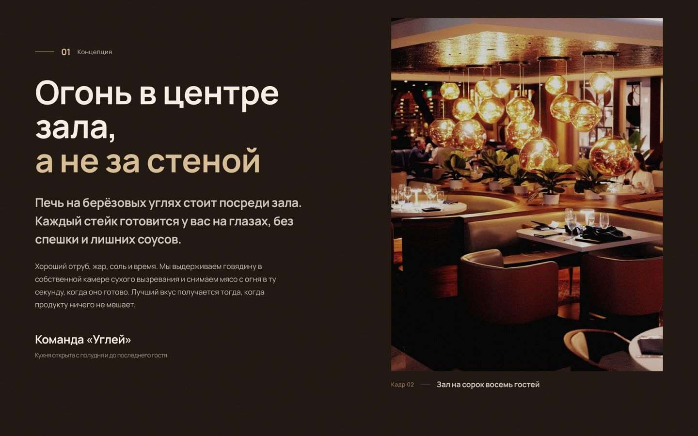

Атмосфера с первого экрана
Тёплая тёмно-коричневая гамма и бронза вместо чёрного, крупный текст и кадры, подписанные как в кино.
- первый экран раскрывается из узкой щели, кадры проявляются медленно;
- цифры заведения крупно: 28 дней, 900 °C, 48 мест, 7 подач;
- на компьютере за курсором идёт слабый тёплый свет.